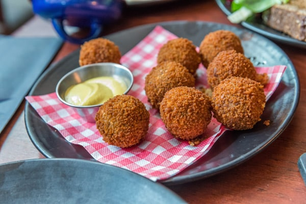
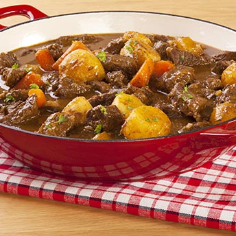
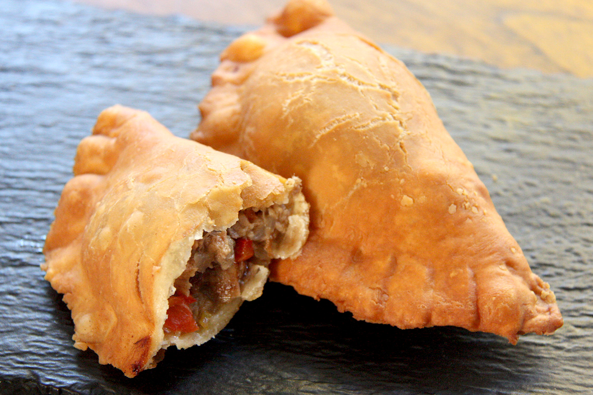

The cuisine in Curacao is very unique as a wide range of cultures intersect on the island, creating delicious platters that tourists and locals enjoy.
The round fried balls here are called bitterballen. These are deep-fried balls of gooey beef and gravy and it’s typically served with mustard for dipping.
This is karni stoba, or beef stew in English. The beef stew, which can also be made with goat, is a dish of cubed, marinated meat simmered with different combinations of onions, garlic, cumin, curry, nutmeg, bell peppers and tomatoes.
This is a pastechi, a savory, crescent-shaped, fried or baked pastry which is similar to an empanada, though the dough is usually lighter.